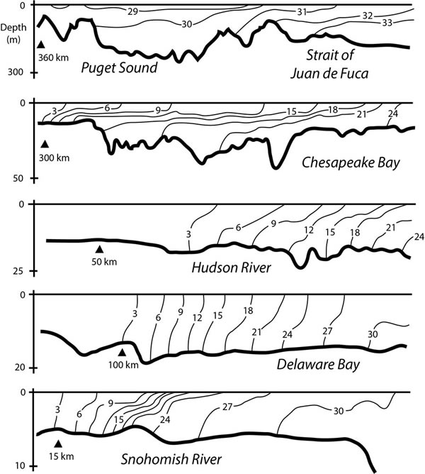

Estuarine Dynamics
Estuaries and fjords are the embayments on the edges of ocean basins where ocean and freshwater are mixed by the energy of tidal currents. The dynamical competition between buoyancy forcing by the river and mixing by the tides creates an along-channel density gradient, evident in along-channel salinity sections from observations in five estuaries of widely different scales.
The remarkable outcome of this competition is that it gives rise to the "exchange flow" where deep water from the ocean is drawn continuously into the estuary at depth. This exchange flow can be many times greater than the flow of river water into the system. The deep inflow traps particles in the estuary. As a result nutrients may be recycled many times, and estauries are typically sites of high biological productivity.
In my group we explore the underlying physics of these unique systems, for both realistic and idealized cases. We have developed scalings for estuarine stratification, the length of the salt intrusion, and the exchange flow. We have created theoretical predictions and simple numerical models for the adjustment time and sensitivity of estuaries to changing forcing. We have developed novel analysis techniques such as the Total Exchange Flow, energy budgets, and salinity variance budgets to better understand these systems.

Related Publications (most recent on top)
- Wang, T., W. R. Geyer, and P. MacCready, 2017: Total Exchange Flow, Entrainment, and Diffusive Salt Flux in Estuaries. J. Phys. Oceanogr., 47, 1205–1220, doi:10.1175/JPO-D-16-0258.1.
- Conway-Cranos, L., P. Kiffney, N. Banas, M. Plummer, S. Naman, P. MacCready, J. Bucci, and M. Ruckelshaus, 2015: Stable isotopes and oceanographic modeling reveal spatial and trophic connectivity among terrestrial, estuarine, and marine environments. Mar. Ecol. Prog. Ser., 533, 15–28, doi:10.3354/meps11318.
- Geyer, W. R., and P. MacCready, 2014: The Estuarine Circulation. Annu. Rev. Fluid Mech., 46, 175–197, doi:10.1146/annurev-fluid-010313-141302.
- MacCready, P., 2011: Calculating Estuarine Exchange Flow Using Isohaline Coordinates *. J. Phys. Oceanogr., 41, 1116–1124, doi:10.1175/2011JPO4517.1.
- MacCready, P., and N. S. Banas, 2011: Residual Circulation, Mixing, and Dispersion. Treatise on Estuarine and Coastal Science, Vol. 2 of, Elsevier, 75–89.
- Sutherland, D. A., P. MacCready, N. S. Banas, and L. F. Smedstad, 2011: A Model Study of the Salish Sea Estuarine Circulation *. J. Phys. Oceanogr., 41, 1125–1143, doi:10.1175/2011JPO4540.1.
- MacCready, P., and W. R. Geyer, 2010: Advances in Estuarine Physics. Ann. Rev. Mar. Sci., 2, 35–58.
- MacCready, P., 2007: Estuarine Adjustment. J. Phys. Oceanogr., 37, 2133–2145, doi:10.1175/JPO3082.1.
- Babson, A. L., M. Kawase, and P. MacCready, 2006: Seasonal and interannual variability in the circulation of Puget Sound, Washington: A box model study. Atmosphere-Ocean, 44, 29–45, doi:10.3137/ao.440103.
- Banas, N. S., B. M. Hickey, P. MacCready, and J. A. Newton, 2004: Dynamics of Willapa Bay, Washington: A Highly Unsteady, Partially Mixed Estuary. J. Phys. Oceanogr., 34, 2413–2427, doi:10.1175/JPO2637.1.
- MacCready, P., 2004: Toward a unified theory of tidally-averaged estuarine salinity structure. Estuaries, 27, 561–570, doi:10.1007/BF02907644.
- MacCready, P., R. D. Hetland, and W. R. Geyer, 2002: Long-term isohaline salt balance in an estuary. Cont. Shelf Res., 22, 1591–1601, doi:10.1016/S0278-4343(02)00023-7.
- MacCready, P., and W. R. Geyer, 2001: Estuarine salt flux through an isohaline surface. J. Geophys. Res. Ocean., 106, 11629–11637, doi:10.1029/2001JC900006.
- MacCready, P., 1999: Estuarine adjustment to changes in river flow and tidal mixing. J. Phys. Oceanogr., 29, 708–726, doi:10.1175/1520-0485(1999)029<0708:EATCIR>2.0.CO;2.